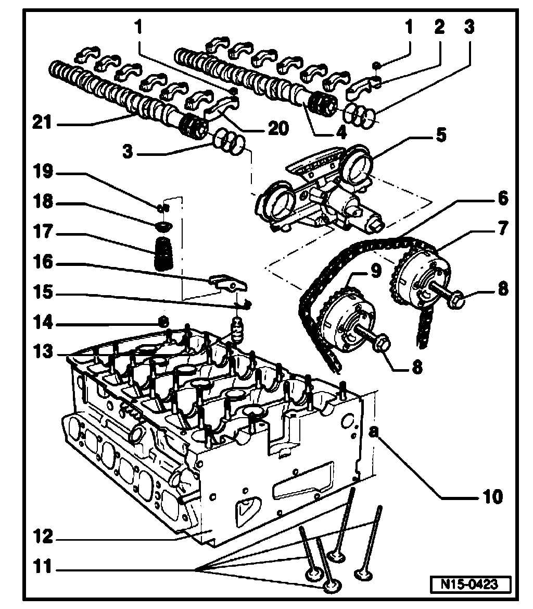
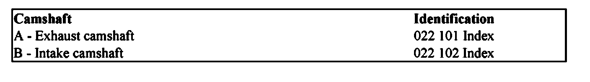
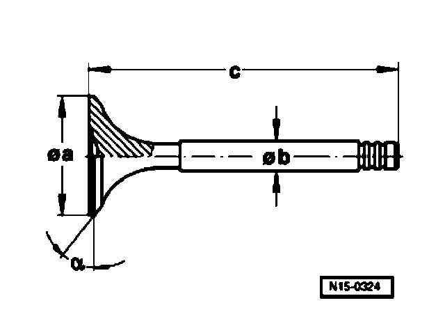

Valve Gear, Servicing
Valve gear, servicing:

1. 5 Nm plus an additional 45° (1/8 turn)
2. Exhaust camshaft bearing cap
^ Installed location. Refer to Installed position of camshaft bearing caps. Installed Position of Bearing Caps
^ Installation sequence. Refer to Camshaft removing and installing. Camshaft, Removing and Installing
3. Oil seal
^ If seal is leaking, replace complete
^ When installing control housing, lightly lubricate contact surfaces of seal
^ When replacing, only spread seals as wide as necessary
4. Exhaust camshaft
^ Checking radial clearance with Plastigage, Wear limit: 0.1 mm
^ Run-out: maximum 0.01 mm
^ Checking axial play. Refer to Camshaft axial clearance checking.
^ Identification. Refer to Camshaft identification. Application and ID
^ Removing and installing. Refer to Camshaft, removing and installing. Camshaft, Removing and Installing
5. Control housing
^ Lightly lubricate contact surfaces of oil seals before installing.
^ Disassembling and assembling. Refer to Disassembling and assembling control housing. Disassembling and Assembling Control Housing
^ Before installing control housing strainer check for contamination. Refer to Check control housing screen for contamination. Check Control Housing Screen For Contamination
^ Removing and installing. Refer to Camshafts, removing and installing. Camshaft, Removing and Installing
6. Camshaft roller chain
^ Mark direction of rotation before removing (installation position) Refer to Marking roller chains. Marking Roller Chains
^ Installing. Refer to Valve timing, adjusting.
7. Exhaust camshaft adjuster
^ Identification: 32A
^ Rotate engine only when camshaft adjuster is installed.
^ Installing. Refer to Valve timing, adjusting.
8. 60 Nm plus an additional 90° (1/4 turn)
^ Replace
^ Contact surface of sender wheel must be dry around bolt head when assembling
^ To remove and install, counter-hold with 32 mm open endwrench on camshaft. Refer to Camshaft, removing and installing. Camshaft, Removing and Installing
9. Intake camshaft adjuster. Refer to Valve timing, adjusting.
10. Cylinder head height
^ Minimum height: a = 139.9 mm
11. Valves
^ Do not rework, only lapping is permitted.


^ Valve dimensions
12. Cylinder head
^ Check for distortion. Refer to Checking cylinder head distortion. Checking Cylinder Head For Distortion
^ Removing and installing. Refer to Cylinder head, removing and installing.
^ Rework valve seats. Refer to Valve seats, reworking. Testing and Inspection
^ After replacing, replace entire amoung of coolant.
13. Support element
^ Before installing check camshaft axial play. Refer to Camshaft axial clearance, checking.
^ Do not interchange.
^ With hydraulic valve clearance compensation.
14. Valve stem seal
^ Replace. Refer to Valve stem seals, replacing.
15. Retaining clip
^ Check for secure seat
16. Roller rocker lever
^ Before installing check camshaft axial play. Refer to Camshaft axial clearance, checking.
^ Do not interchange
^ Check roller for easy movement
^ Lubricate contact surface
^ Use securing clip to clip onto support element when installing.
17. Valve spring
^ Note installation position.
^ Removing and installing. Refer to Valve stem seals, replacing.
18. Valve spring plate
19. Valve keepers
20. Intake camshaft bearing cap
^ Installed location. Refer to Installed position of camshaft bearing caps. Installed Position of Bearing Caps
^ Lightly coat contact surfaces of bearing cap 7 with grease G052 723 A2 before installing.
^ Installation sequence. Refer to Camshaft, removing and installing. Intake Camshaft Bearing Caps Installation Sequence
21. Intake camshaft
^ Checking radial clearance with Plastigage, Wear limit: 0.1 mm
^ Run-out: maximum 0.01 mm
^ Checking axial play. Refer to Camshaft axial clearance, checking.
^ Identification. Refer to Camshaft identification. Application and ID
^ Removing and installing. Refer to Camshaft, removing and installing. Camshaft, Removing and Installing